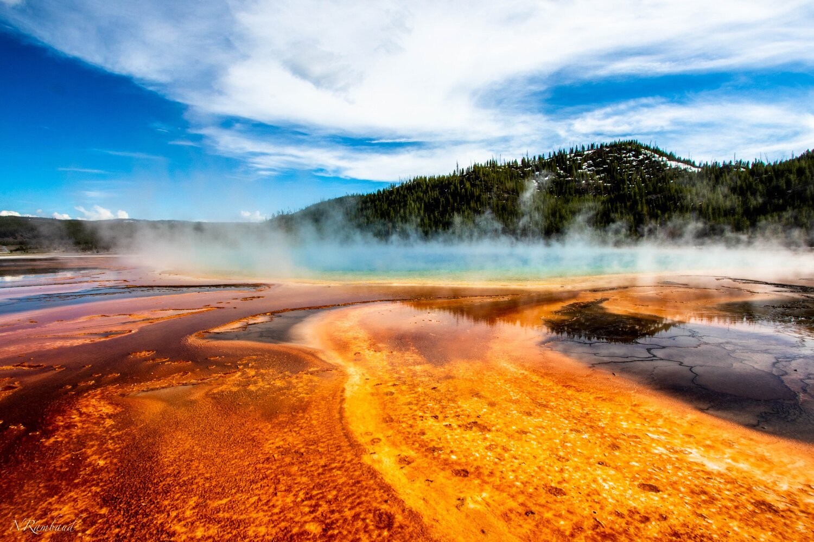
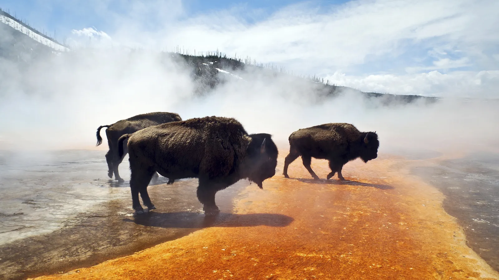
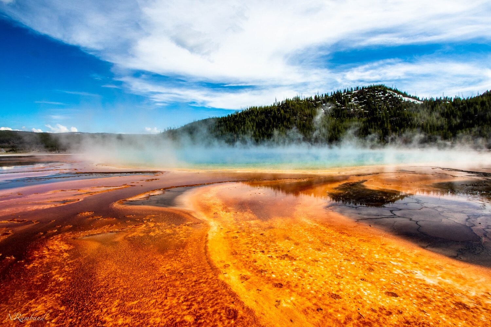
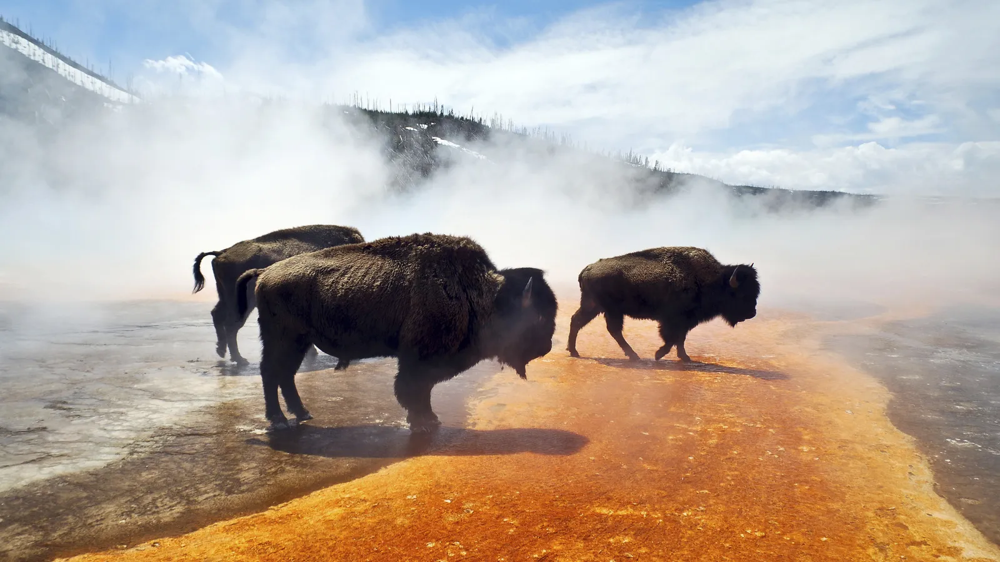
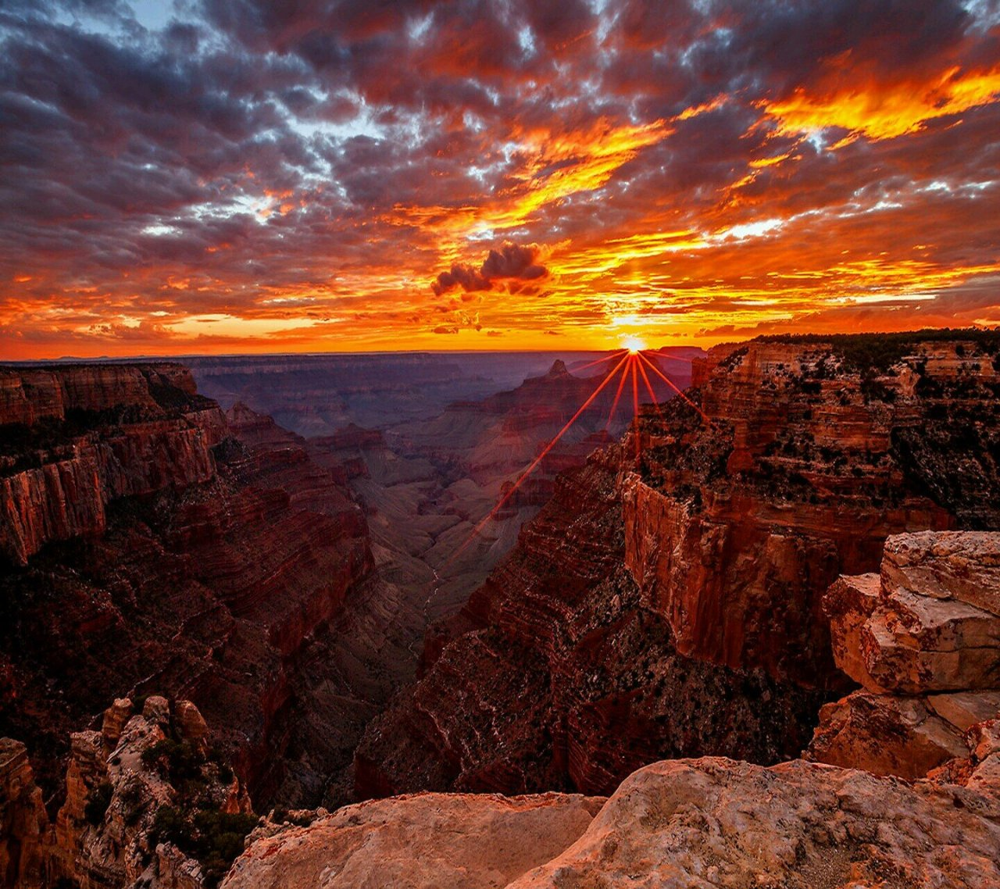
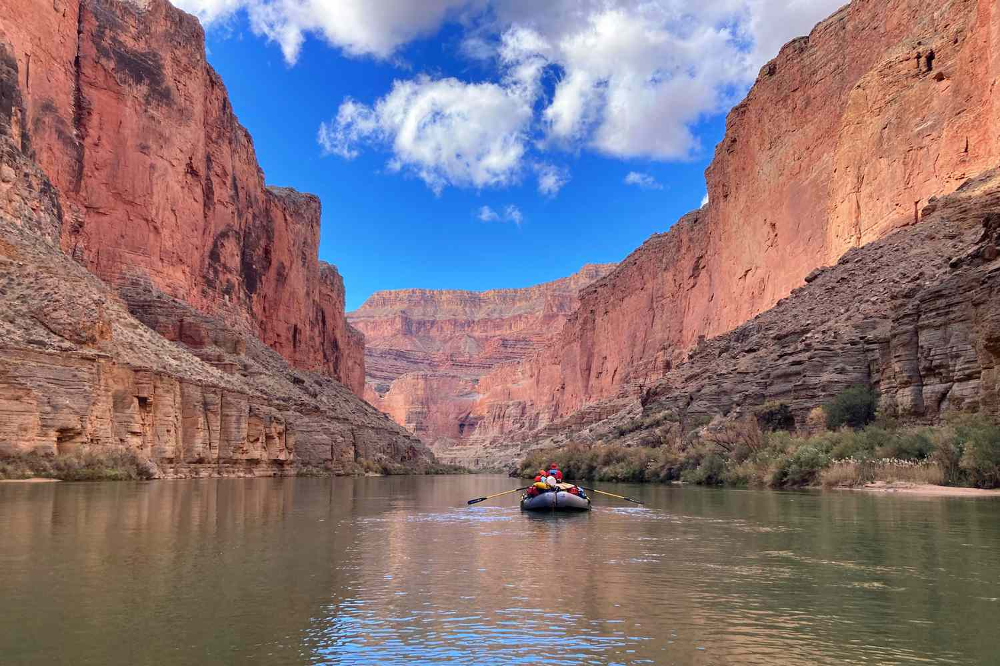
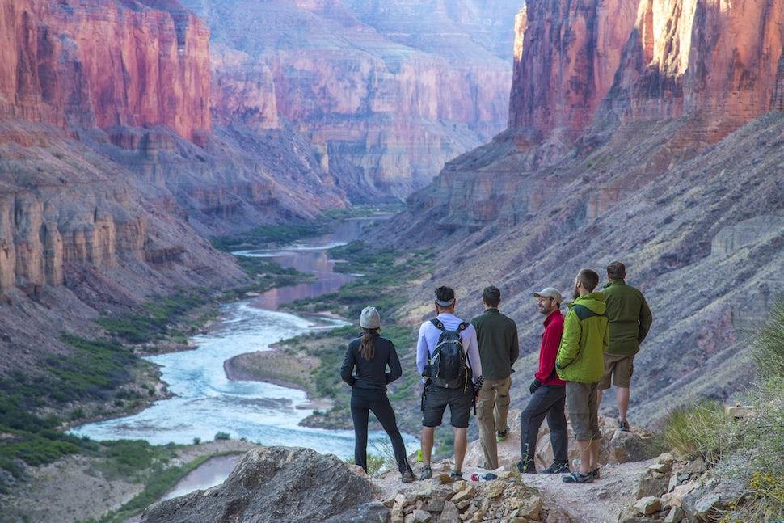
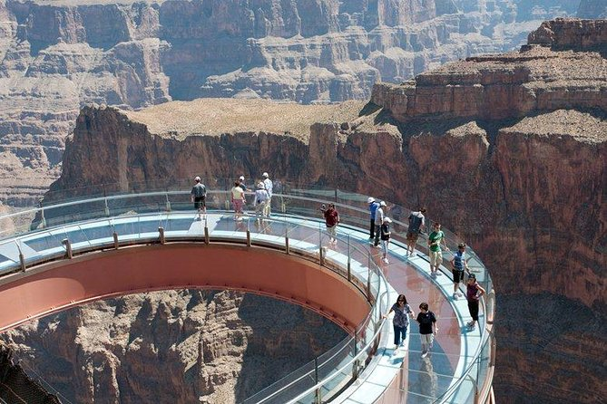
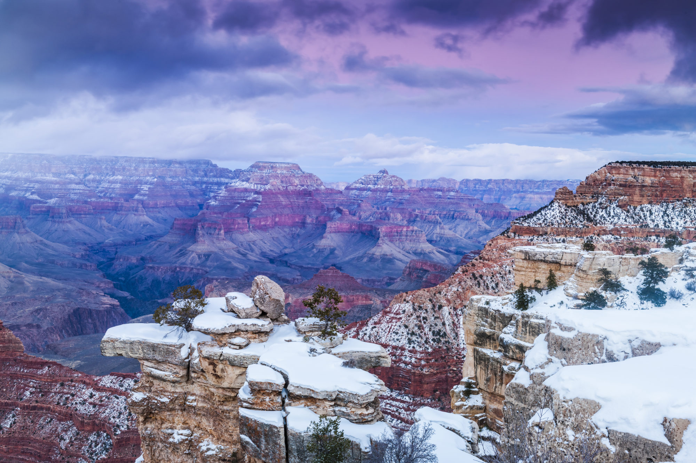
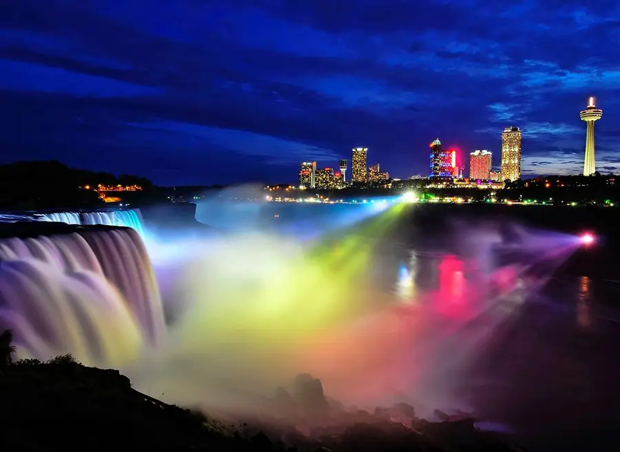

Travel
1. Yellowstone National Park

Yellowstone National Park is located in the United States. It is mostly within Wisconsin, with parts in Montana and Idaho.
Yellowstone is the world's first national park! It covers 2.2 million acres of land. Yellowstone National Park was established on March 1, 1872 under the Yellowstone Natinoal Park Protection Act signed by President Ulysses S. Grant. The park is known for its natural beauty and diverse wildlife.
Organized exploration of the land did not begin until the 1860s. It is important to note Native populations have lived on the land for over 11,000 years, way before it was designated as a national park.
Photo Gallery


 



2. Grand Canyon

The Grand Canyon is located in the United States. It is located in Arizona.
The Grand Canyon is 277 miles long, 18 miles wide, and 1 mile deep. It was carved by the Colorado River. The Grand Canyon is one of the Seven Natural Wonders of the World. It is also a UNESCO World Heritage Site.
The Grand Canyon is a popular tourist destination. It is visited by over 5 million people each year. The Grand Canyon is also a popular hiking destination. The most popular hiking trail is the Bright Angel Trail. It is 9.5 miles long and takes about 4-6 hours to complete.
Photo Gallery
    3. Niagara Falls
Niagara Falls is located in the United States. It is located in New York.
Niagara Falls is a group of three waterfalls. The three waterfalls are the Horseshoe Falls, the American Falls, and the Bridal Veil Falls. The Horseshoe Falls are the largest of the three waterfalls. The American Falls and the Bridal Veil Falls are smaller. The Horseshoe Falls are located on the Canadian side of the border. The American Falls and the Bridal Veil Falls are located on the American side of the border.
Niagara Falls is a popular tourist destination. It is visited by over 30 million people each year. The most popular tourist attraction is the Maid of the Mist boat tour. The Maid of the Mist boat tour takes visitors to the base of the Horseshoe Falls.